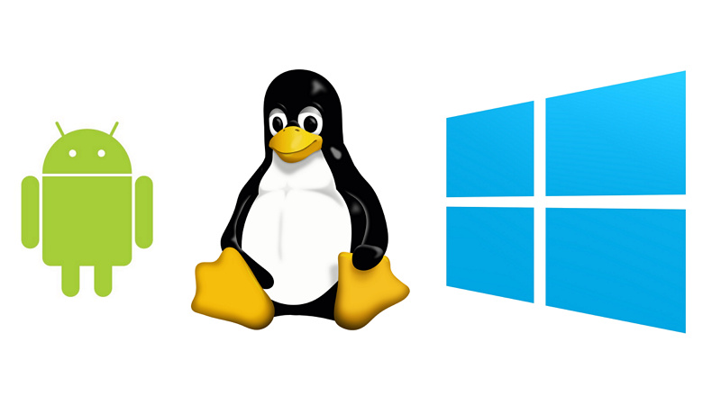

Entendiendo los Sistemas Operativos: El Alma de tu Dispositivo
Los sistemas operativos son el núcleo de cualquier dispositivo informático. Desde la gestión de recursos hasta la interfaz que utilizamos, desempeñan un papel fundamental en la tecnología moderna.
¿Qué es un Sistema Operativo?
Un sistema operativo es un software que actúa como intermediario entre el hardware y los usuarios. Algunos ejemplos populares incluyen Windows, macOS, Linux, Android y iOS.
Tipos de Sistemas Operativos
Existen diferentes tipos de sistemas operativos según su uso. Los más comunes son los sistemas operativos de escritorio, móviles, y los sistemas en tiempo real para dispositivos industriales.
Sistemas Operativos en el Día a Día
Desde encender tu computadora hasta usar tu smartphone, los sistemas operativos son esenciales para ejecutar aplicaciones y gestionar tareas. ¿Cómo sería nuestra vida sin ellos?